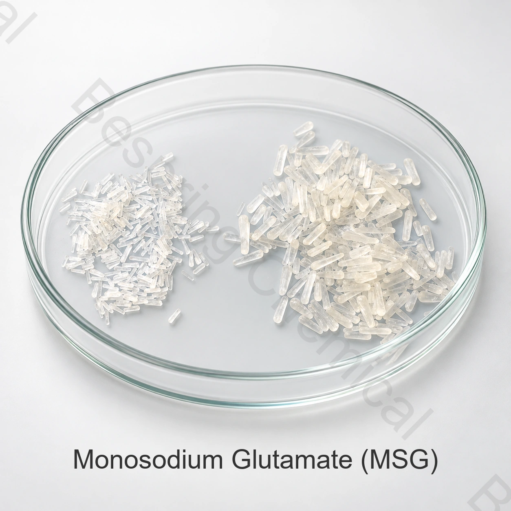

Nhận dạng và trong sạch
Đủ điều kiện để nhận dạng INS 621, lượng Natri trong nội dung, luân chuyển, mất đi những giới hạn rõ ràng và nguyên tố.
Thành phần cấp thực phẩm là · Umami flavour tăng cường ·INS 621
MSG là muối natri của axit L-glutamic, dùng để tạo vị umami. Đối chiếu định danh, cơ sở tính hàm lượng, phương pháp thử và quy định theo nhóm thực phẩm.

Hình minh họa sản phẩm · cấp chất lượng và quy cách đóng gói được nêu trong báo giá
Chia sẻ ứng dụng, giới hạn quan trọng, phương pháp thử nghiệm, số lượng, gói gọn và điểm đến.
LớpĐiểm thực phẩm, khả năng nguồn gốc
Đang góiXác nhận kiểu túi, trọng lượng mạng và tùy chọn kích cỡ hạt
Điều kiện xếp containerXác nhận khi chọn gói và đích
Bằng chứng bantchCần thiết đặc điểm kỹ thuật hiện thời và COA
Đáp án sản phẩm trực tiếp
Thực phẩm cấp L-glutamate (MSG), INS 621, là muối muối của axit L-glutami được sử dụng như chất umami hương vị trong thực phẩm và hệ thống gia vị thích hợp.
Để mua thực phẩm, “phải hỗ trợ thực phẩm mức độ cân bằng bởi một đặc điểm đặc trưng từ nguồn, sản xuất và tài liệu chất lượng thích hợp, và sử dụng hàng loạt COA. Việc sử dụng cuối cùng phụ thuộc vào sự hình thành đầy đủ, chức năng định sẵn và các quy tắc thị trường đích đến.
Danh sách tiến trình
Sử dụng những điểm có thẩm quyền này khi so sánh một nhà cung cấp Trung Quốc, nguồn sản xuất, nhà phân phối, những lời đề nghị, những câu trích dẫn hoặc mẫu.
Đủ điều kiện để nhận dạng INS 621, lượng Natri trong nội dung, luân chuyển, mất đi những giới hạn rõ ràng và nguyên tố.
Cung cấp các thành phần gia vị, cấp độ muối, đặc điểm hương vị mục tiêu, nhu cầu kích thước hạt và quá trình pha trộn.
Lớp pha lê bang, số lượng, đóng gói, điểm đến, giấy chứng nhận và các điều khoản giao hàng.
Phân hủy phân hủy, kết hợp hạt, đóng góp Natri và hoạt động cảm giác trong hoàn chỉnh mùa màng.
Kiểm tra ứng dụng
Đây là các khu vực thực hiện, không chấp thuận phổ biến hay khuyến cáo liều lượng. Xác nhận sử dụng hợp pháp và hiệu suất trong thực phẩm đã hoàn thành.
Thêm vào đó tác động umami và có thể tạo ra những đặc điểm hương vị thơm trong các hợp chất khô.
Dùng trong các công thức thích hợp sau khi thử nghiệm giác quan, tính toán Natri và xem lại nhãn.
Có thể kết hợp thành bột gia vị, nơi mà kích thước hạt và đồng nhất với nhau.
Có thể đánh giá bằng thịt, hải sản, hoặc các hình thức thực vật đối với quy luật thị trường.
Dữ liệu kỹ thuật ứng dụng
Các giá trị sau đây tái tạo thông tin kỹ thuật được cung cấp trong đính kèm 9. Kích cỡ hạt không được xác định trong nguồn và phải được đồng ý trước khi đặt hàng.
Vuốt hoặc dùng bàn phím để đọc tất cả các cột
| Chỉ tiêu | Tham chiếu ứng dụng |
|---|---|
| Natri glutamat | ≥ 99% |
| Kích cỡ Hạt | Chưa ghi rõ trong mã nguồn |
| Chuyển tiếp | ≥ 98% |
| Quay cụ thể [alpha] D20 | +24.90 đến +25.30 |
| Hao hụt khi sấy | ≤ 1% |
| pH | 6.7–7.5 |
| Sắt | ≤ 5 ppm |
| Phân nửa | ≤ 0.05% |
| Thạch tín | ≤ 0.5 ppm |
| Chì (Pb) | ≤ 1 ppm |
| Tửccc | ≤ 5 mg/kg |
Ghi chú dữ liệu: Sự gắn kết cho thấy kích thước của hạt chỉ là “*** bề ngoài, kích cỡ tinh thể hoặc cấp độ hình ảnh là một đòi hỏi hợp đồng nếu cần thiết để phân giải, phân giải hoặc xuất hiện.
Chọn kỹ thuật
Định nghĩa loại tinh thể bình thường, thường xuyên hoặc thô sử dụng phương pháp lọc nhất trí.
Chạy thử nghiệm giác quan trong công thức hoàn tất; MSG không phải là một thay thế cho hình thức cân bằng.
Bao gồm cả sự đóng góp của Natri MG khi xem xét các mục tiêu về dinh dưỡng và hình thức hóa.
Kiểm tra kết quả quay, truyền tải và ô nhiễm trên COA hiện tại.
Hỗ trợ độ phân giải
Yêu cầu các đặc điểm đặc biệt hoặc TDS, SDS, các phương pháp thử nghiệm, đại diện COA và các COA hàng loạt.
Đối chiếu hồ sơ an toàn thực phẩm, xuất xứ, chất gây dị ứng và chứng nhận theo đúng cấp chất lượng và cơ sở. Nếu cần Halal hoặc Kosher, hãy nêu phạm vi và tổ chức cấp được chấp nhận.
ôn lại FAO/JECFA monosdium L-glutamateSau đó áp dụng quy tắc thị trường đích cho chính xác thực phẩm đã hoàn thành.
Lưu trữ và xử lý
Hỏi người mua
INS 621 là mononatri L-glutamat, thường gọi là MSG. Chất này dùng tăng vị umami trong các thực phẩm mặn được phép; E621 là ký hiệu tương ứng tại châu Âu.
Không, xơ rải rác là muối Natri của axit glumamic, trong khi muối trên bàn là Natri chloride. hương vị và thành phần của chúng khác nhau, nên công việc hút muối đòi hỏi phải kiểm tra cảm giác và tính toán cho công thức hoàn chỉnh.
Chọn kích cỡ tinh thể so với sự khớp hạt khô, phân giải, phân giải và cần thiết xuất hiện. Đặc tả tham chiếu trên trang này không xác định kích cỡ hạt; đồng ý với nguồn.
Yêu cầu các phương pháp phân tích và đại diện và COA hàng loạt đã được ký hiện thời. Xác nhận danh tính, giả sử, xoay cụ thể, rõ ràng và giới hạn ô uế thích hợp cho lớp đã chọn.
Cung cấp cho các gia vị hoặc thực phẩm ứng dụng, quy định kích thước tinh thể, mục tiêu tiêu tiêu tiêu chuẩn và giới hạn quan trọng, số lượng, gói gọn, đích đến, chứng chỉ và các điều khoản giao hàng.
Nội dung cập nhật 2026-09-13.
Thành phần liên quan
Hãy xem lại một lựa chọn bảo tồn khác và đặc điểm thu thập của nó.
Hãy xem lại một thực phẩm khác phosphate và các phân tích trợ cấp.
Duyệt danh mục đầu tư thành phần đầy đủ và hồ sơ kỹ thuật sẵn sàng.
Hướng dẫn ứng dụng liên quan: Chuẩn bị thực phẩm, nước sốt và kẹo cao su.
Tìm nguồn dựa trên chỉ tiêu kỹ thuật
Hãy chia sẻ các hồ sơ, mức độ mục tiêu và giới hạn, số lượng, đóng gói, điểm đến và cần thiết cho một đề xuất lớn có liên quan.
Nếu không dùng được biểu mẫu, hãy dùng trang liên hệ. Bạn cũng có thể gửi email cho bộ phận kinh doanh.
Cho chúng tôi biết điểm số và điểm đến của anh để chúng tôi có thể xác nhận tài liệu nào có sẵn cho đơn đặt hàng của anh.
Một tham chiếu bên ngoài không phải là một chứng nhận hàng loạt hoặc một đặc điểm sản phẩm Bespring.